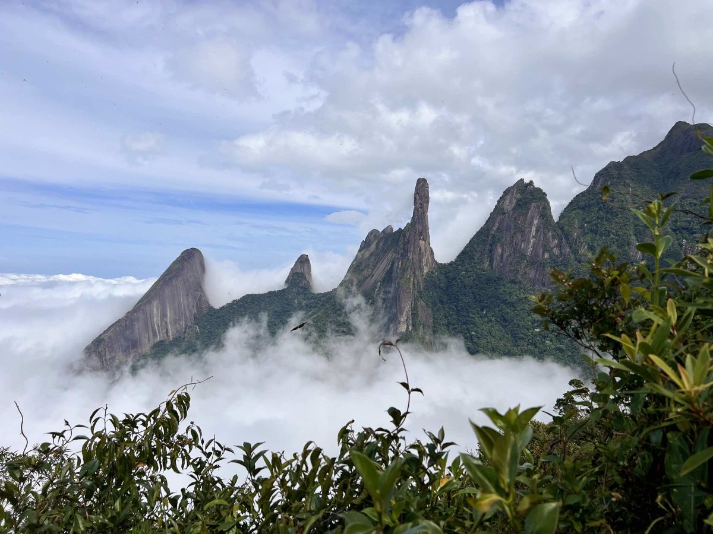

Bem-vindo ao Circuito Terê Verde
Descubra as trilhas, cachoeiras e a riqueza natural de Teresópolis, na Região Serrana do Rio de Janeiro. Natureza preservada, aventura e conhecimento ambiental.

Trilhas e Percursos
Rotas para todos os níveis, da caminhada leve à travessia desafiadora pela Serra dos Órgãos.
Ver TrilhasBiodiversidade
Conheça as espécies de fauna e flora que tornam Teresópolis um santuário natural.
Explorar